Select location
Alamo River Above Drop 3 Alamo River Outlet Alamo River at Drop 10 Central Drain Alamo River at International Boundary All American Canal at Mesa 2 All American Canal, Borderline Almaden Lake Alondra Park Lake American Canal at Bridge South of Quechan Casino American River at Discovery Park American River, Silver Fork American River, South Fork at Coloma Anderson Lake Antelope Lake Apollo Lake Balboa Lake Bass Lake Beardsley Belvedere Park Lake Berkeley (4) Bethany Reservoir Big Bear Lake Big Break Big Lake Big Pine Creek above Big Pine Campground Big Reservoir Bishop Creek below Bishop Park Campground Black Butte Lake Blue Lakes Boca Reservoir Bodega Harbor Bon Tempe Lake Bowman Lake Bridgeport Reservoir Briones Reservoir Brite Valley Lake Buckeye Cr, above Eagle Cr (abv campground) Bucks Lake Bullards Bar Reservoir Butt Valley Reservoir Butte Creek near Butte Meadows Butte Lake Calaveras Reservoir Calero Reservoir Camanche Reservoir Cambria/Cayucos Coast/Northern San Luis Obispo County Coast Camden Percolation Pond across from Page Desilting Basin #2 Camden Percolation Pond below Los Gatos Creek Park #3 Camp Far West Reservoir Cape Mendocino Area Caples Lake Carmel Coast Carson River, East Fork upstream of Hangman's Bridge Castac Lake Castaic Lagoon Castaic Lake Castle Lake Catalina Island Cave Lake Central Bay (6) Central Drain Cerritos Park Lake Chesbro Reservoir Clear Lake Cleone Lake Cold Creek at Potter Valley Collins Lake Colorado River at Blythe Contra Loma Reservoir Convict Lake Copco Lake Cosumnes River Cosumnes River, Middle Fork at Pi Pi Courtright Reservoir Coyote Lake Crater Lake Crescent City Coast Crystal Cove to Santa Ana River Crystal Lake Dana Point Harbor Dead Horse Slough Dead Lake Del Norte Coast Diablo Canyon Coast Discovery Bay Dixon Lake Dodge Reservoir Don Pedro Reservoir Donner Lake Duncan Reservoir Eagle Lake East Park Reservoir East Walker River below Bridgeport Reservoir Eastman Lake Echo Lake Eel River (Van Arsdale Fishing Counting Station) El Capitan Lake El Dorado Lakes Elderberry Forebay Elizabeth Lake Elkhorn Slough Ellery Lake Fall River at Island Road near McArthur Fallen Leaf Lake Farallon Islands Faucherie Lake Feather River Middle Fork at Sloat Feather River upstream Yuba City Feather River, Middle Fork upstream Clio Feather River, North Fork above Beldon Bridge Feeley Lake Ferguson Lake Finger Lake Finney Lake Florence Lake Folsom Lake Fort Bragg Area Franks Tract French Meadows Reservoir Frenchman Lake Fuller Lake Gene Wash Reservoir Gold Lake Goleta to Pt Conception Grant Lake Gull Lake Gumboot Lake Half Moon Bay Coast Hansen Lake Harbor Lake (Lake Machado) Harry L Englebright Lake Hat Creek downstream Old Station Hell Hole Reservoir Hensley Lake Hernandez Reservoir Hetch Hetchy Reservoir Hollenbeck Park Lake Honker Bay (McAvoy Fish Derby) Horseshoe Lake, Quarry Lakes Howard Lake Humboldt Bay Hume Lake Huntington Lake Ice House Reservoir Independence Creek at Grays Meadow Campground Indian Creek Reservoir Iron Canyon Reservoir Iron Gate Reservoir Irvine Lake Isabella Lake Jackson Meadow Reservoir Jameson Lake Jamison Creek 82 Jenkinson Lake John Ford Park Lake June Lake Kangaroo Lake Ken Hahn Park Lake Kern River Below Fairview Campground Kidd Lake Klamath River (Iron Gate FH) Klamath River Above Boise Creek La Grange Reservoir La Jolla to San Onofre La Mirada Park Lake Lafayette Reservoir Lago Los Osos Laguna de Santa Rosa at Occidental Rd Lake Almanor Lake Alpine Lake Amador Lake Arrowhead Lake Berryessa Lake Britton Lake Cachuma Lake Cahuilla Lake Calabassas Lake California Lake Casitas Lake Chabot (San Leandro) Lake Chabot (Vallejo) Lake Combie Lake Crowley Lake Cunningham Lake Davis Lake Elizabeth Lake Elsinore Lake Evans Lake George Lake Gregory Lake Havasu Lake Hemet Lake Henne Lake Hennessey Lake Henshaw Lake Hodges Lake Hughes Lake Jennings Lake Kaweah Lake Lindero Lake Madigan Lake Mamie Lake Mary Lake Mathews Lake McClure Lake McSwain Lake Mendocino Lake Merced Lake Nacimiento Lake Natoma Lake Oroville Lake Pillsbury Lake Piru Lake Poway Lake Sabrina Lake San Antonio Lake Shastina Lake Sherwood Lake Sonoma Lake Spaulding Lake Sutherland Lake Tahoe Lake Vasona Lake Webb Lake Wohlford Lake del Valle Lake of the Pines Las Virgenes Reservoir Lee Lake/Corona Lake Lee Vining Cr, at Moraine Camp Legg Lake Lewiston Lake Liberty Island Lily Lake Lincoln Park Lake Little Grass Valley Reservoir Little Oso Flaco Lake Little Rock Reservoir Loch Lomond Reservoir Lockwood Creek at Confluence of Seymour Cr. Lone Pine Creek at Whitney Portal Campground Long Beach Loon Lake Lopez Lake Los Banos Reservoir Los Vaqueros Reservoir Loveland Reservoir Lower Bear River Reservoir Lower Blue Lake Lower Blue Lake - Alpine County Lower Bucks Lake Lower Crystal Springs Reservoir Lower Mokelumne River 1 Lower Mokelumne River 2 Lower Mokelumne River 3 Lower Mokelumne River 5 Lower Mokelumne River 6 Lower Mokelumne River 7 Lower Otay Reservoir Lundy Lake Mad River (Mad River Fish Hatchery) Malibou Lake Mammoth Pool Reservoir Marsh in Fresno Slough McCloud River at Lower Falls below Fowlers Camp McCumber Reservoir Meadows Slough Medicine Lake Mendocino Coast Area Mendota Pool/Mendota Slough Merced River Merced River at El Portal Foresta Road Merced River below Briceburg Bridge Middle River at Bullfrog Middle River near Empire Cut Middle Santa Monica Bay Middle Truckee River, Below Canyon 24 Millerton Lake Mission Bay Modesto Reservoir Mokelumne River (Mokelumne River FH) Mokelumne River near I-5 Mokelumne River u/s Pardee Reservoir Mokelumne River, NF below Grouse Cr. Monterey/Pacific Grove Coast Moon Lake Morena Reservoir Morro Bay Morro Bay Coast Moss Landing/Marina Coast Mud Slough at HWY 140 New Hogan Lake New Melones Lake New River Outlet New River at Boundary New River at Fig Drain New River at Fig Drain New River at Greeson Drain New River near Calexico Water Treatment Plant Newport Bay Nicasio Lake North Battle Creek Reservoir North Humboldt County Coast Area North Mendocino County Coast Area North Santa Barbara County Coast/Pismo Beach Area North Santa Monica Bay Northern Channel Islands Northern Marin Coast ONeill Forebay Oakland (2) Oceanside Harbor Oiger Quarry Ponds Old River at Cliffton Court Forebay Oleander Drain Orange County Oil Platforms Owens River at Hwy 6 Pacifica Coast Palmdale Lake Palos Verdes Paradise Lake Peck Road Water Conservation Park Perris Reservoir Pilarcitos Lake Pillar Point Harbor Pine Flat Lake Pinecrest Pinto Lake Pit River at Big Bend Plaskett Lake Pleasant Valley Reservoir Point Arena Area Port San Luis Area Potato Slough Prado Lake Prospect Slough Prosser Creek Reservoir Pt Dume to Oxnard Pt Loma Pt Loma to La Jolla Puddingstone Reservoir Pyramid Lake Ramer Lake Reservoir C Reservoir F Rice 3 Drain Rincon to Goleta Rock Creek Lake Rollins Reservoir Russian River (Coyote Valley Dam Egg Collection) Ruth Lake Ryer Island (McAvoy Fish Derby) SD North Bay SD South Bay Sacramento River at Bend Bridge Near Red Bluff Sacramento River at Channel Marker 33 Sacramento River at Colusa Sacramento River at Knights Landing Sacramento River at RM44 Sacramento River at Rio Vista Sacramento River near Castle Crags State Park Saddlebag Lake Salton Sea San Francisco Coast San Francisco Waterfront (3) San Joaquin R at Louis Park San Joaquin River at HWY 140 San Joaquin River at Lander Avenue San Joaquin River at Merced River San Joaquin River at Sycamore Island San Joaquin River at Vernalis San Joaquin River off Pt Antioch near fishing pier San Joaquin River, Middle Fork near Agnew Meadows San Luis Reservoir San Mateo Coast San Onofre to Crystal Cove San Pablo Bay (5) San Pablo Reservoir San Pedro Bay San Vicente Reservoir Santa Ana River Northwest of South Fork Campgrounds Santa Ana River to Seal Beach Santa Barbara Channel Oil Platform Santa Cruz Area Wharfs/Beachs Santa Cruz Coast Area Santa Fe Reservoir Santa Paula Cr. down stream from Big Cone Campground Santo Margarita Lake Scotts Flat Reservoir Senator Wash Reservoir Sepulveda Lake Shadow Cliffs Reservoir Shasta Lake Shelter Cove Area Silver Lake (Region 5) Silver Lake (Region 6) Silverwood Lake Sisar Creek down stream from Howell Place Siskiyou Lake Soulejoule Lake South Bay (1) South Central Drain RWB7 South Form Smith River near Goose Cr South Santa Monica Bay South Sonoma Coast/North Sonoma Coast South Yuba River at Van Norden Dam Southern Marin Coast Southern Monterey County Coast/Big Sur Coast Spanish Creek at Oakland Camp Road crossing Spicer Meadow Reservoir Spring Lake Spring Valley Lake Squaw Lake Stampede Reservoir Stanislaus River Stevens Creek Reservoir Stony Gorge Reservoir Stump Meadow Lake Success Lake Suisun Slough (McAvoy Fish Derby) Sunbeam Lake Susan River ~0.6mi above Jensen Slough Sweetwater Reservoir TJ to North Island Taylor Lake Thermalito Afterbay Tioga Lake Toe Drain Toluca Lake Tomales Bay Topaz Lake Trinidad Area Trinity Lake Trinity River above Junction City Tulloch Reservoir Tunnel Reservoir Tuolumne River Tuolumne River below Forest Route 1N07 Bridge Turlock Lake Twin Lakes Union Valley Reservoir Unnamed Lake 1 Unnamed Lake 2 Upper Blue Lake Upper Cache Slough (McAvoy Fish Derby) Upper San Leandro Reservoir Upper Twin Lake Uvas Reservoir Van Duzen River downstream of Forest Road 1S07 Ventura to Rincon Virgina Cr, below Willow Springs (at USGS gage) Virginia Lakes Warner Creek 30 West Fork Carson River, at HWY 89 (Hope Valley) West Valley Reservoir West Walker River, near Chris Flat Campground Westlake Lake Whiskeytown Lake White Pines Lake Wiest Lake Wilderness Park Lake Wishon Reservoir Woodward Reservoir Yosemite Lake Yuba River, South Fork above Canyon Creek Yuba River, South Fork upstream Lake Spaulding Zayak/Swan Lake
Zoom to county:
Alameda
Alpine
Amador
Butte
Calaveras
Colusa
Contra Costa
Del Norte
El Dorado
Fresno
Glenn
Humboldt
Imperial
Inyo
Kern
Kings
Lake
Lassen
Los Angeles
Madera
Marin
Mariposa
Mendocino
Merced
Modoc
Mono
Monterey
Napa
Nevada
Orange
Placer
Plumas
Riverside
Sacramento
San Benito
San Bernardino
San Diego
San Francisco
San Joaquin
San Luis Obispo
San Mateo
Santa Barbara
Santa Clara
Santa Cruz
Shasta
Sierra
Siskiyou
Solano
Sonoma
Stanislaus
Sutter
Tehama
Trinity
Tulare
Tuolumne
Ventura
Yolo
Yuba
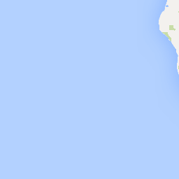
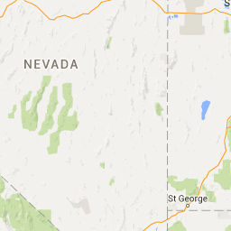
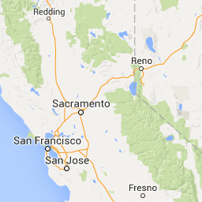
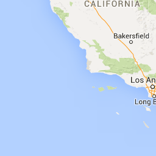
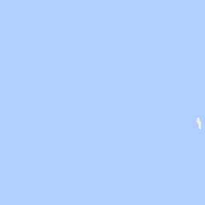
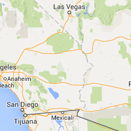
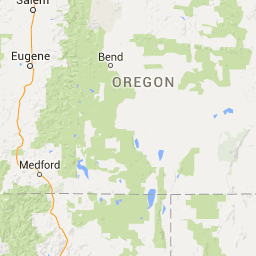
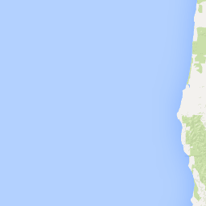
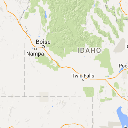
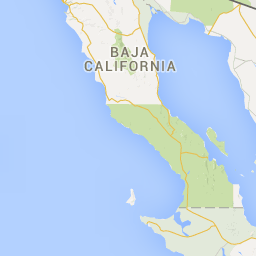
Map Data
Map data ©2016 Google, INEGI
Map data ©2016 Google, INEGI
Map
Refresh Map
|
Zoom To Data
Contaminant Data
This interactive map allows you to explore fish contaminant data for your fishing locations. Data are available from extensive monitoring by SWAMP of lakes and reservoirs in 2007 and 2008, of the coast in 2009 and 2010, of rivers and streams in 2011, and from other studies. Data from 2007-2014 are shown by default.
Map Instructions Hide
Select parameters of interest from the menus below and click on the "Go" button. The map
will display average concentrations for the selected water bodies.
To view data for all species at your water body, trends, or comparisons with nearby water bodies,
click on a map location or select a water body from the menu above the map.
Enter your own threshold or modify thresholds displayed on the map by clicking the Change Thresholds link in the map legend.
Markers are general representations of sampling locations, not the precise locations where fish were caught.
Circles indicate lake and reservoir sampling locations. Triangles indicate coast sampling locations. Diamonds indicate river and stream sampling locations.
Select Species:
Species With Highest Avg Concentration
Select Contaminant:
Mercury
Go
Reset
Mercury in Species With Highest Avg Concentration (ppm)
Years: 2007 - 2014
>0.44
0.3 - 0.44
0.22 - 0.3
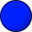 0.15 - 0.22
0.07 - 0.15
<0.07
Change Thresholds More Information
This map shows data generated by:
What are the most recent data for my location?
What are the trends at my location?
How does my location compare to nearby water bodies?


 Loading Map ...
Loading Map ...